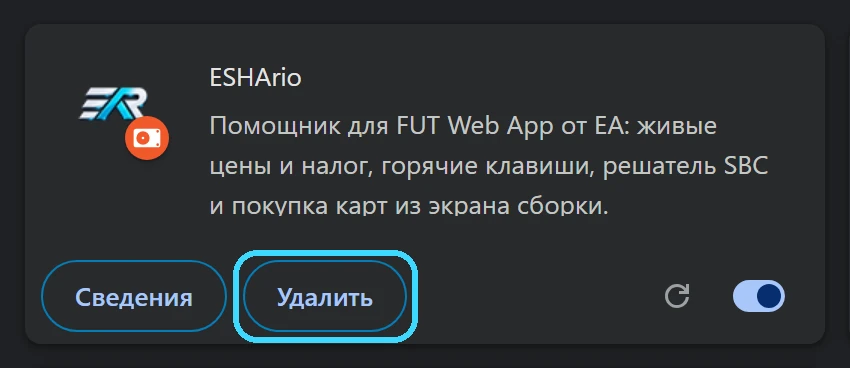
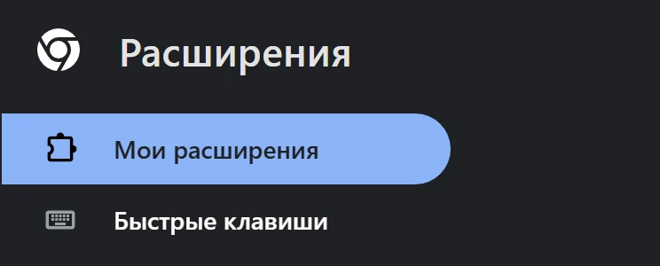
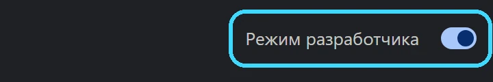
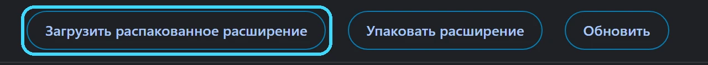
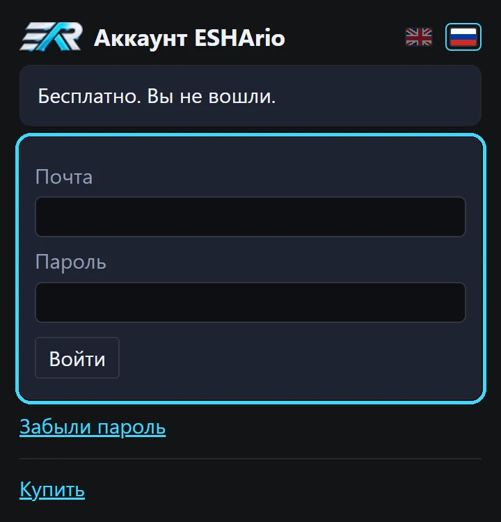
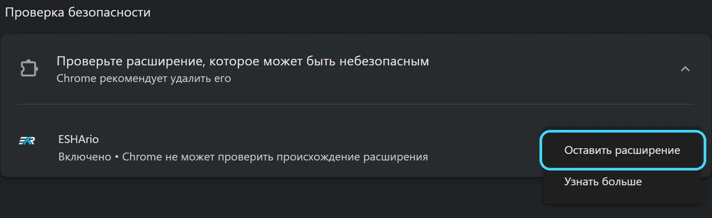
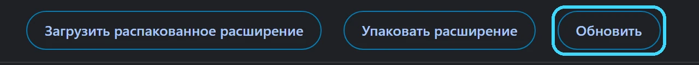

Установка ESHArio
ESHArio ставится с нашего сайта один раз. Дальше код приезжает с нашего сервера за секунды, при каждом открытии вебапа.
Свежая версия с сайта
Архив нужен один раз: дальше код приезжает с нашего сервера за секунды.
Нужен Chrome на компьютере: Windows, Mac или Linux.
Видео скоро: за минуту покажем установку по шагам.
Установка: восемь шагов
- 1
Уберите прежний ESHArio, если он стоит
На странице chrome://extensions у ESHArio нажмите «Удалить»: и у копии из магазина, и у прежней копии с сайта. У нового архива свой номер в Chrome, и две копии рядом мешали бы друг другу. Настройки и замки карт решателя в этом Chrome сотрутся. Покупка останется: после установки войдите снова.

- 2
Скачайте архив
Нажмите кнопку ниже. Архив ляжет в папку «Загрузки». Chrome может пометить свежий архив как редко скачиваемый файл: нажмите «Сохранить».
- 3
Распакуйте архив
Chrome не открывает zip. В окне выбора папки архива не будет вовсе, и это не поломка: Chrome ждёт уже распакованную папку.
Правый клик по архиву, «Извлечь все», «Извлечь». На Mac архив открывается двойным щелчком. Положите папку туда, где она останется, например в «Документы/ESHArio»: Chrome берёт расширение прямо из неё.
- 4
Откройте страницу расширений
Нажмите «Копировать» ниже, вставьте адрес в адресную строку Chrome и нажмите Enter. Откроется страница «Расширения».
chrome://extensions
- 5
Включите «Режим разработчика»
Переключатель справа вверху. Он только разрешает ставить расширения из папки и больше ничего не меняет.

- 6
Нажмите «Загрузить распакованное расширение»
Выберите распакованную папку из третьего шага, ту, где лежит файл manifest.json. ESHArio появится в списке расширений.

- 7
Закрепите значок ESHArio
Справа от адресной строки нажмите значок пазла, в списке у ESHArio нажмите булавку. Значок встанет на панель Chrome и будет всегда под рукой.
- 8
Войдите в аккаунт
Нажмите значок ESHArio на панели Chrome или «войти» у знака ESHArio в шапке вебапа. Откроется окно входа: почта и пароль из письма о покупке. Бесплатные функции работают и без входа.

Если при запуске Chrome спросит «Отключить расширения в режиме разработчика?», нажмите «Отмена». Обычно такого окна нет.
Chrome предлагает удалить ESHArio?
Так Chrome помечает любое расширение не из магазина: «Chrome не может проверить происхождение расширения». Нажмите три точки справа и «Оставить расширение». Пока включён режим разработчика, этот вопрос не появляется.

Как обновиться
ESHArio обновляется сам: новая версия приходит с нашего сервера при следующем открытии вебапа, качать ничего не нужно. Новый архив нужен редко, об этом скажет строка «Нужен новый архив» в шапке вебапа. Тогда:
- Скачайте новый архив с этой страницы.
- Распакуйте его в ту же папку и согласитесь заменить файлы.
- На chrome://extensions нажмите «Обновить».
- Обновите вкладку вебапа клавишей F5.
При удалении расширения замки карт решателя стираются, обновляйте поверх, не удаляя.
Настройки и вход при обновлении сохраняются.
Не получилось? Напишите в Telegram или на почту support@eshario.com, поможем.
